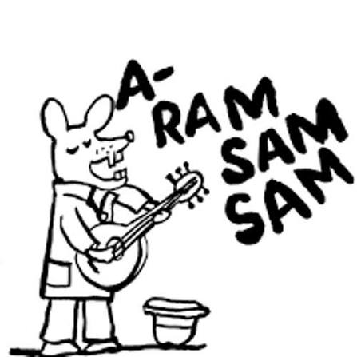

A Letra Tradicional da Brincadeira
A ram sam sam, a ram sam sam Guli, guli, guli, guli, guli, ram sam sam A ram sam sam, a ram sam sam Guli, guli, guli, guli, guli, ram sam sam A rafiq, a rafiq Guli, guli, guli, guli, guli, ram sam sam A rafiq, a rafiq Guli, guli, guli, guli, guli, ram sam sam (Algumas versões brasileiras adaptam as palavras e mudam "A rafiq" para "Auê, auê" ou "Mãos para cima, nunca desista")
